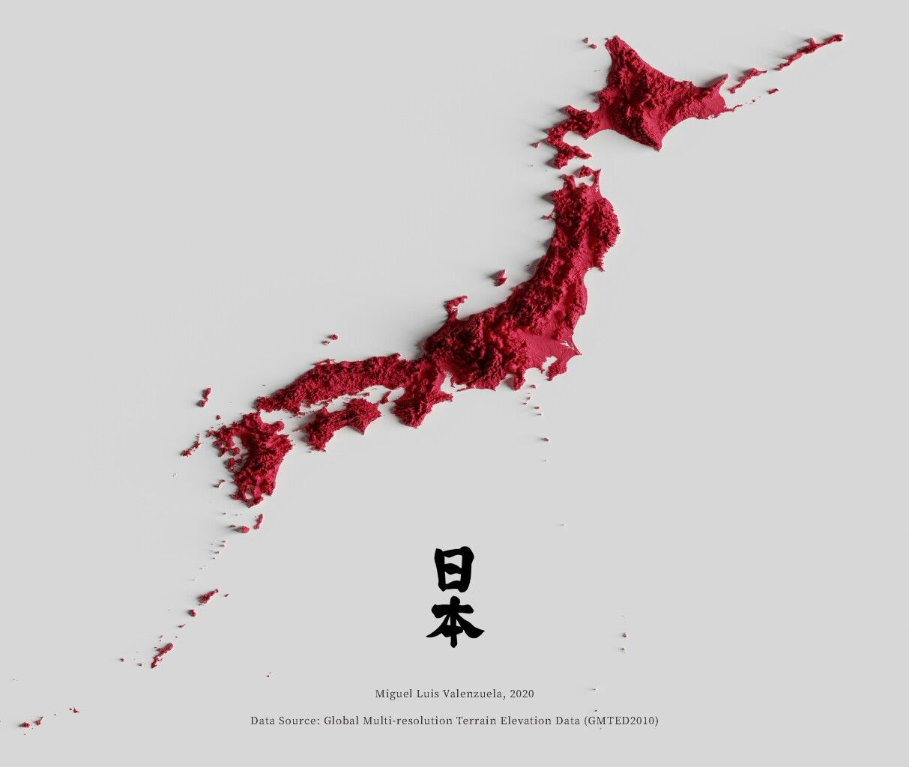

Lugares

- Akihabara
- Arashiyama
- Asakusa
- Castillo de Himeji
- Fushimi Inari Taisha
- Ginza
- Isla de Miyajima
- Kioto
- Meiji Shrine
- Monte Fuji
- Nara
- Nikko
- Osaka
- Parque Nacional de Jigokudani Monkey
- Parque Nacional de los Alpes Japoneses
- Parque Ueno
- Shibuya
- Shinjuku
- Templo Kinkaku-ji (Pabellón Dorado)
- Tokio Disneyland
- Tsukiji Fish Market
- Universal Studios Japan
- Valle de Iya
- Yokohama